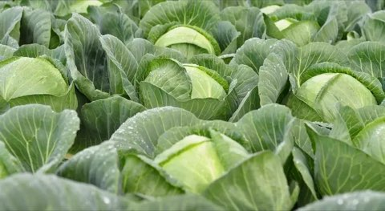

Choux Verts
Nos choux verts, cultivés avec soin dans nos champs, sont croquants, savoureux et pleins de bienfaits. Riches en fibres, en vitamines et en minéraux, ils sont parfaits pour des plats mijotés, des soupes ou tout simplement braisés.
Grâce à une culture respectueuse de l’environnement, sans pesticide ni engrais chimique, nos choux conservent toute leur authenticité et leur goût unique. Chaque chou est récolté à la main au moment idéal de maturité.
Caractéristiques
- Certifiés Agriculture Biologique
- Récoltés à la main
- Texture ferme et feuilles croquantes
- Riche en vitamines C et K
- Idéal pour potées, soupes et plats mijotés
- Culture sans traitement chimique
Prix :
2,50€ / pièce